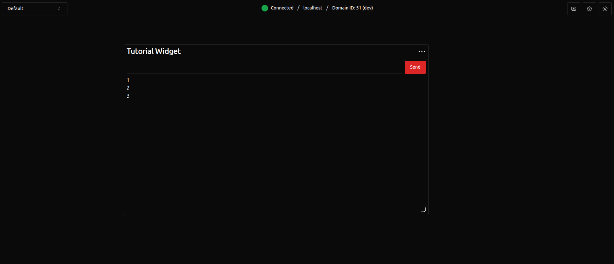
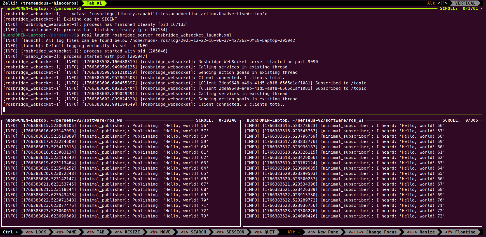

Widget Tutorial
This tutorial will show you how to make a basic ROS2 widget that interfaces with the talker and listener tutorial nodes. Before beginning this tutorial you must:
- Have read the R.O.A.R. software standards (General and Typescript sections)
- Have an understanding of Svelte and ROS2
- Complete the getting started guide
:::{note}
All file paths mentioned in this tutorial are relative to the root of the Web-UI (perseus-v2/software/web-ui)
:::
:::{important} Any development should be done in a branch! For more information visit here :::
Creating a New Widget
Before we make any files, you should have a look at where widget files belong. They can all be found inside src/lib/widgets/. Any .svelte file in this directory is assumed to be a widget. All additional files (scripts and components) that belong to your widget should be placed inside a folder with the same name as your widget in this directory.
To create a widget a script has been provided. From the root of the web-ui project run:
You should now have a new file in your project: src/lib/widgets/myFirstWidget.svelte. The last step is to edit the name and description export at the top of the file. You don't have to worry about the other fields here yet, we'll get to them later.
Adding Markdown and Styles
Let's add some HTML so we can see and send messages with ROS2 later on. To keep everything looking good and easy to recognise, we'll make sure to use the shadcn UI library for as much as we can. Let's replace <p>New component</p> with the following code:
<div class="flex h-full w-full flex-col">
<form class="flex flex-row">
<input id="message" class="mb-2 mr-2" />
<button>Send</button>
</form>
<ScrollArea class="flex-1" orientation="vertical">
{#each [1, 2, 3] as message}
<p>{message}</p>
{/each}
</ScrollArea>
</div>
Using shadcn
Due to how shadcn uses named and default exports the automatic imports for the Input, Button and ScrollArea might not be correct. Ensure new imports have been added to the client script (without the module flag) and that they match these:
import { Input } from "$lib/components/ui/input/index.js";
import { Button } from "$lib/components/ui/button/index.js";
import { ScrollArea } from "$lib/components/ui/scroll-area/index.js";
:::{important} When using custom components in markdown always use PascalCase and kebab-case for style class names as per the standard. Furthermore, always use tailwind classes when possible. :::
Testing Time
The time has come where you're eager to checkout what your widget looks like! Testing in development is very easy, just run the command:
:::{tip}
If it's your first time running the web-ui you will need to run the command yarn with no arguments to install dependencies
:::
Once the development server is running, you can access it in a browser on the same machine from http://localhost:5173 or on a different machine by replacing "localhost" with your devices ip address (both of these URL's should be printed in the terminal once the dev server has been run).
Finally, to actually see our new widget, press the add widget button in the top right and select the name you set at the start. The widget will appear very small to start with so I'd recommend resizing it.
The only step that you'll need to repeat next time is the yarn dev command, everything else will be setup and saved for next time.
If you don't see something like this then go back and double check you've done everything above correctly.

ROS2 Connections
Running the ROS2 Bridge
Before we start writing code for connecting to the ROS2 bridge we need to run some ROS2 nodes!
Development of ROS2 nodes is beyond the scope of this tutorial and for guidance you should consult the official documentation. We will still need something to test our widget with, my recommendation is to create new talker and listener nodes by following the tutorial linked above.
:::{warning}
Ensure you make the talker and listener inside perseus-v2/software/ros_ws and run all the following commands from inside the perseus-v2 repo aswell so you get access to the ROS2 Jazzy install we use for the rover.
:::
:::{tip} I would strongly recommend using a terminal multiplexer so each node can be run in the same terminal. My favourite is zellij. :::
Now that we have all the ROS2 nodes ready you can follow these steps to run them:
- Navigate to
perseus-v2/software/ros_wsin two terminal windows. - Build and source the new talker and listener nodes in both terminal windows:
colcon build && source install/setup.bash(the suffix.bashmay be different depending on your shell). - Run the talker in one window and the listener in another using
ros2 run cpp_pubsub talkerandros2 run cpp_pubsub listenerrespectively. - In a new terminal window run
ros2 launch rosbridge_server rosbridge_websocket.xmlto start the ROS2 bridge.
To check that it is all running correctly you should see 3 terminals similar to this:

Using the JS Interface
The main challenge when using roslibjs with a component based framework is ensuring connections are managed correctly. So that you don't have to worry about this a single connection is managed by the web ui that can be accessed using the getRosConnection() function.
Before we write any code there are a few rules for the design patterns used when writing ROS2 code in a widget:
- Avoid making ROS2 related variables reactive as they will be assigned inside an
$effect. - Do NOT initialise anything related to ROS2 in the
onMounthook, even if you really want to. - Always set
isRosDependanttotrueandgroupto'ROS'if using thegetRosConnection()function. - Dispose of all ROS2 resources you created in the function returned by the
onMounthook (the return value is run on unmount).
As per the third rule mentioned above, you should now uncomment and set the group and isRosDependant exports.
Then it's finally TypeScript time! Add the following to the client script tag in your widget. For more information on the pattern used here check out the web ui development docs.
import { onMount } from "svelte";
// Type definition for ROS string message
type StringMessage = { data: string };
let topic: ROSLIB.Topic<StringMessage> | null = null;
let messages = $state<Array<string>>([]); // List of past messages
let input = $state<string>(""); // Text input model
// Using effect to reactively reinitialise after re/gaining connection
$effect(() => {
const ros = getRosConnection();
if (ros) {
// Unsubscribe from previous topic if any
topic?.unsubscribe();
topic = new ROSLIB.Topic({
ros: ros,
name: "/topic",
messageType: "std_msgs/msg/String",
});
// Add a subscription callback
topic.subscribe((message) => messages.unshift(message.data));
} else {
topic = null;
}
});
const sendMessage = (e: Event) => {
e.preventDefault();
if (!input) return;
// Create and send string message
const message = { data: input };
topic?.publish(message);
input = "";
};
onMount(() => {
return () => {
// Clean-up on unmount
topic?.unsubscribe();
};
});
Putting it all Together
Now that we've got some code to send an receive topic messages we can give our markdown some functionality.
Let's first replace [1, 2, 3] in out each ... as template with messages. Then add bind:value={input} to the Input element so we can access the value of the input field. Finally, to send the messages when the enter key is pressed add onsubmit={sendMessage} to the form element and onclick={sendMessage} to the Button element to register a click event handler.
Congratulations! You should now have a functional widget that can send and receive ROS2 messages. Try sending some and watching the output appear in the terminal of the listener and your own widget!
Creating and Using Settings
While the widget we've made works fine it doesn't let you customise anything. Let's fix this by creating some widget settings that let us enable/disable the sending function and another to set a custom topic to use.
Send Enable/Disable Switch
Inside the groups property of the settings object add:
This defines a settings group called "general" with one option labelled "Disable send form" with a switch as it's input.
To apply this setting we can simply wrap the input form in a {#if} template:
{#if settings.groups.general.disableSendForm.value === 'false'}
<form class="flex flex-row" onsubmit="{sendMessage}">
<input id="message" class="mb-2 mr-2" bind:value="{input}" />
<button onclick="{sendMessage}">Send</button>
</form>
{/if}
Custom Topic Setting
Inside the general group we can add another setting:
Since the settings object is a state rune and our ROS2 topic is initialised in an effect we don't need to do anything fancy to trigger updates. We just have to update how we initialise the topic variable:
// Using effect to reactively reinitialise after re/gaining connection
$effect(() => {
const ros = getRosConnection();
if (ros) {
// Use a default value if custom topic is falsy
const topicName = settings.groups.general.topic.value || "/topic";
ros.getTopicType(topicName, (type) => {
const topicType = type || "std_msgs/msg/String";
topic?.unsubscribe(); // Unsubscribe from previous topic if any
topic = new ROSLIB.Topic({
ros: ros,
name: topicName,
messageType: topicType,
});
// Add a subscription callback
topic.subscribe((message) => messages.unshift(message.data));
});
} else {
topic = null;
}
});
Now when you type a new topic name our widget will automatically try listening and publishing to that topic. The key word being "try" as we are currently not handling the event that the topic does not exist which would silently break the widget without an error. As an extension to this tutorial you should try and add some error handling (hint: check the other arguments of the ros.getTopicType function)
Congratulations
You have now created your first widget for the web UI! For more examples and help checkout the other widgets that have already been made or send a message on discord.
Full Code
<script lang="ts" module>
import type {
WidgetGroupType,
WidgetSettingsType,
} from "$lib/scripts/state.svelte";
export const name = "New Widget";
export const description = "Simple send and receive ros topic data widget. ";
export const group: WidgetGroupType = "ROS";
export const isRosDependent = true;
export const settings: WidgetSettingsType = $state<WidgetSettingsType>({
groups: {
general: {
disableSendForm: {
type: "switch",
value: "false",
},
topic: {
type: "text",
value: "",
},
},
},
});
</script>
<script lang="ts">
import { getRosConnection } from "$lib/scripts/rosBridge.svelte";
import * as ROSLIB from "roslib";
import { Input } from "$lib/components/ui/input/index.js";
import { Button } from "$lib/components/ui/button/index.js";
import { ScrollArea } from "$lib/components/ui/scroll-area/index.js";
import { onMount } from "svelte";
// Type definition for ROS string message
type StringMessage = { data: string };
let topic: ROSLIB.Topic<StringMessage> | null = null;
let messages = $state<Array<string>>([]); // List of past messages
let input = $state<string>(""); // Text input model
// Using effect to reactively reinitialise after re/gaining connection
$effect(() => {
const ros = getRosConnection();
if (ros) {
// Use a default value if custom topic is falsy
const topicName = settings.groups.general.topic.value || "/topic";
ros.getTopicType(topicName, (type) => {
const topicType = type || "std_msgs/msg/String";
topic?.unsubscribe(); // Unsubscribe from previous topic if any
topic = new ROSLIB.Topic({
ros: ros,
name: topicName,
messageType: topicType,
});
// Add a subscription callback
topic.subscribe((message) => messages.unshift(message.data));
});
} else {
topic = null;
}
});
const sendMessage = (e: Event) => {
e.preventDefault();
if (!input) return;
// Create and send string message
const message = { data: input };
topic?.publish(message);
input = "";
};
onMount(() => {
return () => {
// Clean-up on unmount
topic?.unsubscribe();
};
});
</script>
<div class="flex h-full w-full flex-col">
{#if settings.groups.general.disableSendForm.value === 'false'}
<form class="flex flex-row" onsubmit="{sendMessage}">
<input id="message" class="mb-2 mr-2" bind:value="{input}" />
<button onclick="{sendMessage}">Send</button>
</form>
{/if}
<ScrollArea class="flex-1" orientation="vertical">
{#each messages as message}
<p>{message}</p>
{/each}
</ScrollArea>
</div>